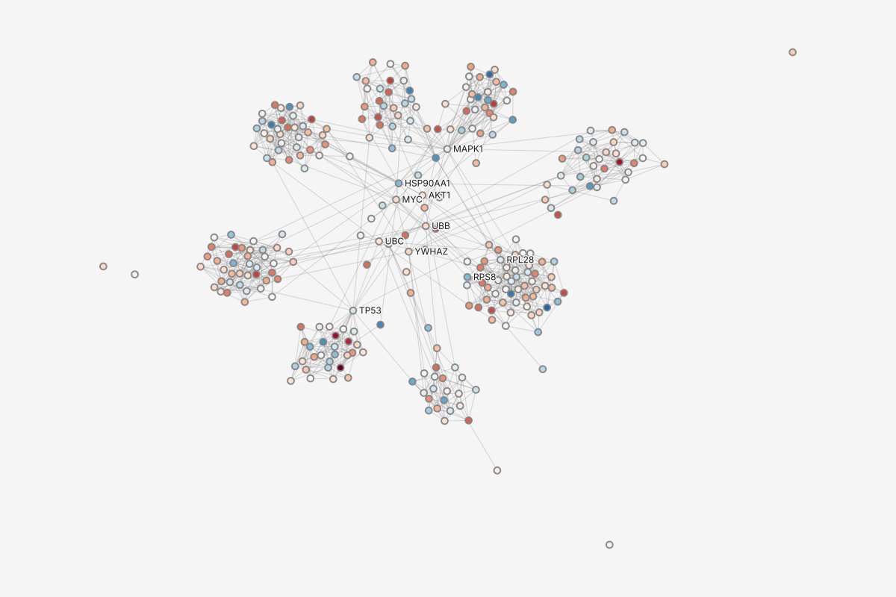
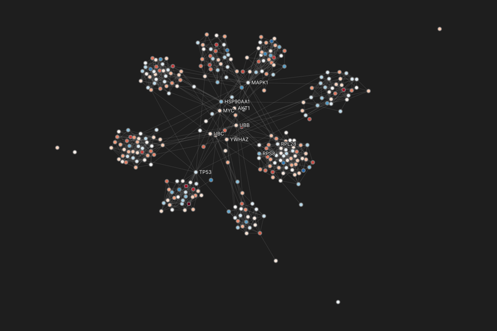
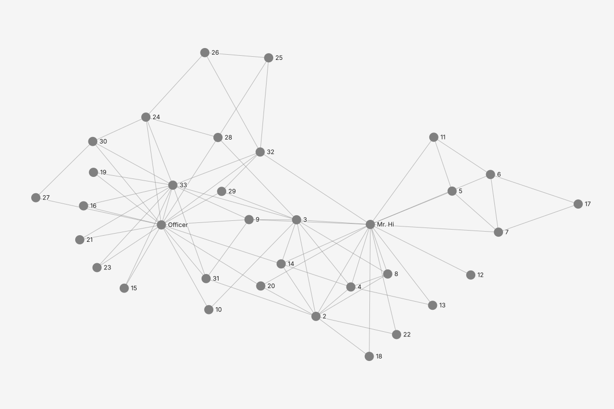
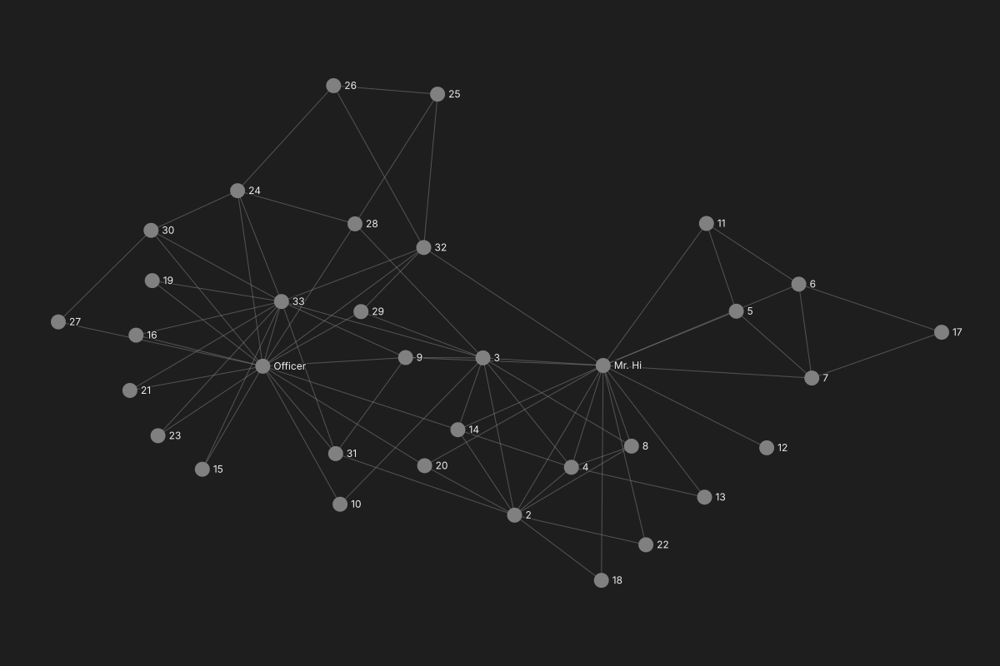
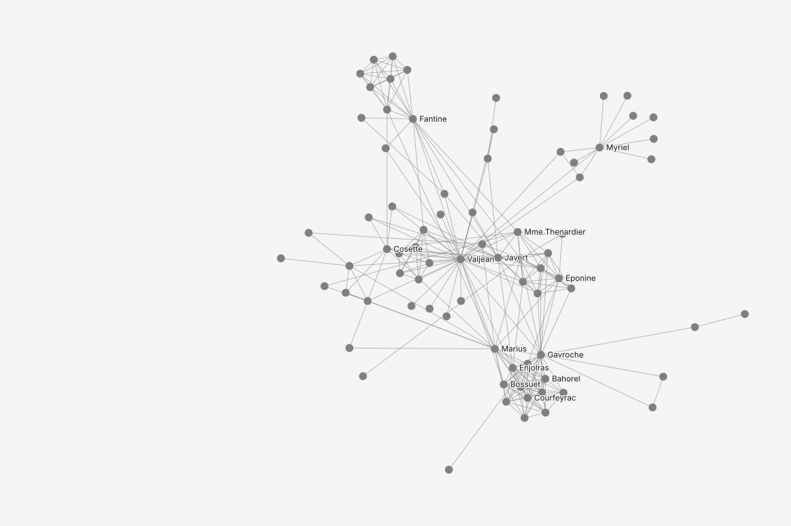
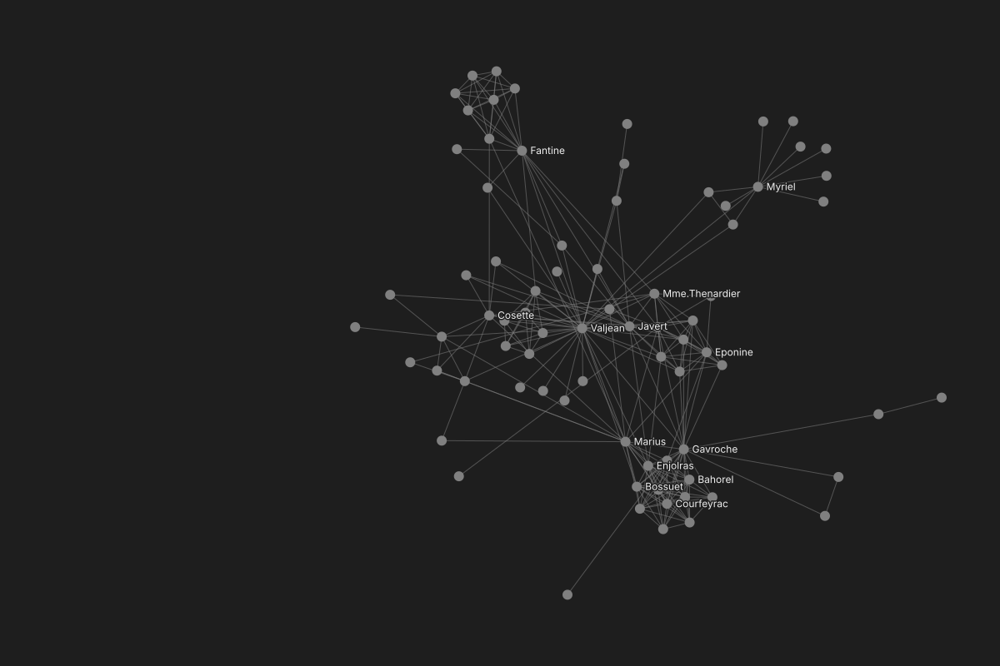
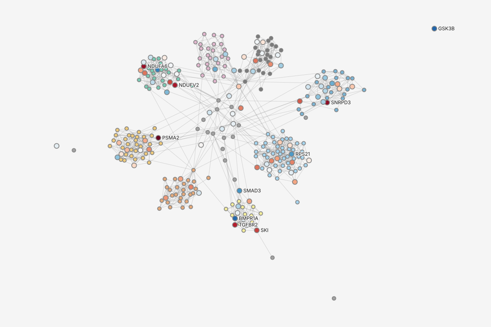
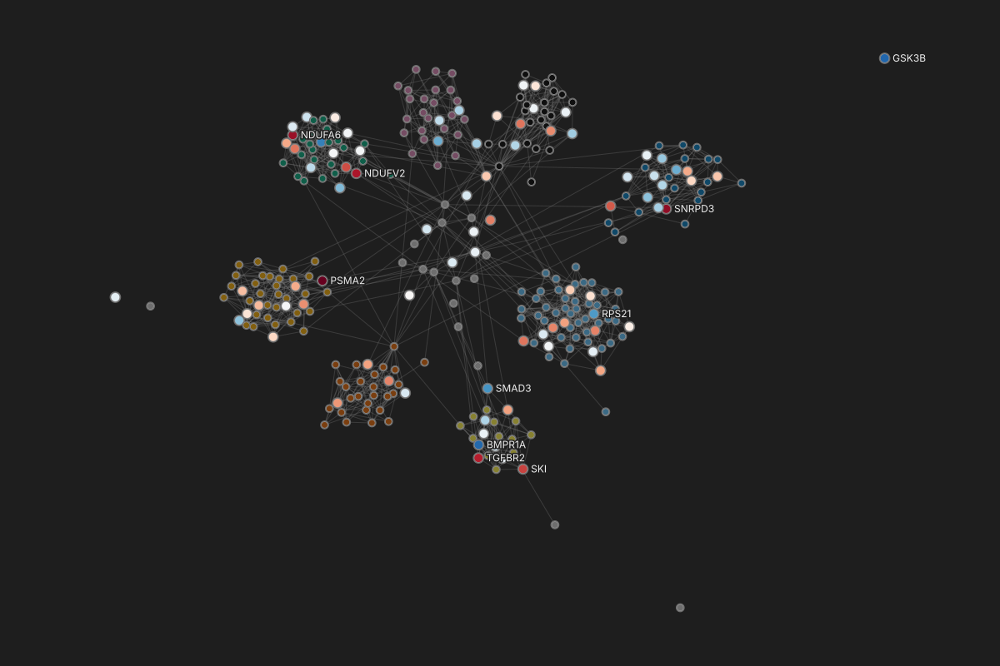

Fold change color log2FoldChange
-2.52 down03.15 up
A lab's computational postdoc saves how the lab colors a protein network as a recipe with no data inside. The lab manager opens it on his own laptop, adds the lab's network and his qPCR hits, sees how many of his genes matched and which did not, chooses which of two fold-change columns to color by, and applies it in one step that one Undo takes back. Six states and two branches, the second a recipe that holds only styles, applied from Main menu > Recipes > Apply a recipe..., and the same file opened through File > Open..., Data > Sources > Add a source... or a drop, which all open the one Apply dialog; each frame is 1440 by 900; light and dark follow the system. The storyboard is A starting point travels. Every number comes from the protein network and the 96-row qPCR table in the kit's fixtures.
Maren, the lab's computational postdoc, chooses Recipes, Export recipe... The Export dialog opens with only Recipe checked. Scope is disabled because a recipe carries no data; its tooltip says so. The preview's first line answers "is any of our data in here?".


Tom, the lab manager, drops the emailed recipe on graphty's start screen; File > Open... or Data > Sources > Add a source would bring it to this same card, because graphty-element recognizes the file as a recipe whichever way it comes in, and every way leads to the same Apply dialog. With a project open, Main menu > Recipes > Apply a recipe... is a fourth way in (the styles branch below). Nothing is applied and no project exists yet. The card says what the recipe does and who saved it and when, that it holds no data, what he must supply under "Expects:" (the same list Maren saw in her Export preview), and where his data will go. Add data... replaces Open...; the samples stay, as data to try it on.
Colors your genes by log2 fold change, red for up and blue for down, draws the other proteins in muted module colors, and hides interactions with confidence under 0.7.
No data inside.






The dialog body is drawn in full, and kept current, in the binding step mock; where this frame differs, that page wins. The recipe matches genes with exact letter case, which is why Mdm2 is a hand match here. Tom has added ppi-core-300.graphml and qpcr-hits-2026-09.csv; the Apply dialog opens without a load step because both files read without a question. Before anything changes it says how many of his genes matched and names each one that did not. The network already carries a log2FoldChange from an earlier screen, and his table brings this week's log2FC, so graphty binds neither silently: the row asks which, then how to read it. Below that, the dialog asks how the recipe's two layers go in, with the same two choices as every Apply dialog: Use these styles first, then Add these styles on top, and neither preselected. Apply waits for both choices and says so.
Add a protein network and a table of your genes with a fold-change column. Files on disk were not changed.
Add data...Tom picks his table's log2FC and "below 0 is down, above 0 is up". The row shows what that means on his numbers: 36 up and 48 down among his 84 matched genes. He chooses Use these styles; nothing of his is replaced, because his only layer, Base style, always stays. Apply is ready.
Add a protein network and a table of your genes with a fold-change column. Files on disk were not changed.
Add data...The overlay is on his data: 84 genes in red (up) and blue (down), the other 216 proteins in muted module colors, weak interactions hidden. The notice and the graph's Statistics both carry the count, so it is still there after the notice goes. With the filter on, Statistics reads 12 components and 11 isolated proteins.


| id | module 9 values | log2FC -2.41 to 2.98; 216 empty |
|---|---|---|
| PSMA2 | Proteasome | 2.98 |
| SNRPD3 | Spliceosome | 2.62 |
| NDUFA6 | Complex I | 2.53 |
| NDUFV2 | Complex I | 2.38 |
| TGFBR2 | TGF-beta | 2.27 |
| SKI | TGF-beta | 1.93 |
One Undo removes the whole apply: the colors, the filter, the recipe's layers and the loaded files. The project stays, with the recipe waiting for data, and the canvas card says his files on disk were not changed. Cancel or Esc in the Apply dialog lands here too. Undo gives no notice of its own, since the canvas visibly empties; Redo is Ctrl+Shift+Z or Edit, Redo.
Add a protein network and a table of your genes with a fold-change column. Files on disk were not changed.
Add data...17If Tom adds an older export of the lab's network, ppi-core-300-2024.graphml, with protein names only, the recipe's module and confidence parts have no column to read. Each row says what it switches off; nothing is skipped silently. With no column named log2FoldChange anywhere, graphty proposes log2FC because it is the only column of the level the recipe asks for, a signed number, and marks it proposed. Apply still applies the rest; the notice and Statistics then add "2 parts off".
Add a protein network and a table of your genes with a fold-change column. Files on disk were not changed.
Add data...A week later Maren sends the lab's poster colors as a recipe that holds only styles: no data, no expectations about columns beyond the names module and confidence. Tom's project is open, so he chooses Main menu > Recipes > Apply a recipe... and picks lab-poster-colors.graphty in the file picker. File > Open..., Data > Sources > Add a source... or a drop on the window would each recognize the same file as a recipe and open the same Apply dialog; the next two frames draw the first two.
Tom could open the same file from Main menu > File > Open... instead. graphty-element reads the file, sees a recipe rather than data, and opens the one Apply dialog below over the project that is open; it does not start a new project. The picker accepts data files and recipes alike, so there is nothing to choose first.
| id | module 9 values | log2FC -2.41 to 2.98; 216 empty |
|---|---|---|
| PSMA2 | Proteasome | 2.98 |
| SNRPD3 | Spliceosome | 2.62 |
| NDUFA6 | Complex I | 2.53 |
| NDUFV2 | Complex I | 2.38 |
| TGFBR2 | TGF-beta | 2.27 |
| SKI | TGF-beta | 1.93 |
Or he could add it where he adds his files, from the Data panel's Sources section. graphty-element recognizes the recipe here too, and the same Apply dialog opens; the recipe is then listed under Applied recipes, never as a source. A drop on the window does the same.
| id | module 9 values | log2FC -2.41 to 2.98; 216 empty |
|---|---|---|
| PSMA2 | Proteasome | 2.98 |
| SNRPD3 | Spliceosome | 2.62 |
| NDUFA6 | Complex I | 2.53 |
| NDUFV2 | Complex I | 2.38 |
| TGFBR2 | TGF-beta | 2.27 |
| SKI | TGF-beta | 1.93 |
The same Apply dialog as for the Expression overlay, with no data files and no binding: both layers matched by name. Neither choice is preselected. Use these styles names the one layer of his it will replace and the one it keeps, because Fold change color is scoped to his matched genes and is a finding, not a color scheme. Either choice acts at once as one undo step; the notice reads "Replaced 1 layer, kept 1." with Undo, and one Ctrl+Z brings his Module color back.
| id | module 9 values | log2FC -2.41 to 2.98; 216 empty |
|---|---|---|
| PSMA2 | Proteasome | 2.98 |
| SNRPD3 | Spliceosome | 2.62 |
| NDUFA6 | Complex I | 2.53 |
| NDUFV2 | Complex I | 2.38 |
| TGFBR2 | TGF-beta | 2.27 |
| SKI | TGF-beta | 1.93 |
| # | Element | Framework | compact-mantine |
|---|---|---|---|
| 1 | Recipes, Export recipe... opens the Export dialog with only Recipe checked | task-flows.md 9 (starting point: Recipes, Export recipe..., one step); interface-templates.md 20 (Export...); interaction-pattern-entries.md 6.11 | Mantine Modal (720) with ModalFooter; ControlSection of ToggleRows |
| 2 | Scope disabled while only definition outputs are checked; the reason is the tooltip | figma-crosswalk.md (a field with no effect is disabled, not explained); see framework-changes.md | Mantine Select, disabled, with Tooltip |
| 3 | Trust check first: the file holds no data, said in the recipient's words | task-flows.md 9 (a recipe holds only definitions); files-and-recipes.md 1; user-journeys.md 4 | ProseBlock with the check glyph |
| 4 | What the recipient will be asked for, by kind, not by internal slot name | one-way-doors.md 19 (requirement slots: attribute, join); content-design.md (plain words) | DataRow list |
| 5 | The start screen with a recipe pending: the summary heads the list | interface-templates.md 19 (recipe pending); information-architecture.md 6 (Recipe row) | ProseBlock card; Mantine Button |
| 6 | Who saved it and when. A recipe records who saved it and when, from the project's author setting as given; blank if none is set | one-way-doors.md 19 (identity); see framework-changes.md | ProseBlock line |
| 7 | Where the data goes, answered before any data is added. PROPOSED wording and placement | one-way-doors.md 19 (contacts nothing before the host is named); see framework-changes.md | ProseBlock with the lock glyph |
| 8 | The count before Apply: N of M genes matched | task-flows.md 8 (trust check: matched and unmatched counts); one-way-doors.md 27 | DataRow in a heading size |
| 9 | Every unmatched id by name, with only the reason the element can tell from the value; a case-only match offered by hand | task-flows.md 8 (first failure: never skipped silently); message graphty.file.report. Reasons PROPOSED | DataRow grid; Mantine Button (secondary); Copy as a subtle Button |
| 10 | Two columns fit the fold change: one by name in the network, one in the table added with it. Neither is bound silently. PROPOSED rule | interaction-pattern-entries.md 6.10 (match by name and level, a picker for the rest); see framework-changes.md | FieldRow with Select; RadioGroup of two |
| 11 | The reading of a signed column is confirmed, as a weight role is; Apply waits for it | files-and-recipes.md 1 (always confirms a weight slot); options-and-encodings.md 2 rule 1. Extending it to signed color slots is PROPOSED | Mantine SegmentedControl |
| 12 | What the recipe reads: the join key first, as a Select like every other part | interaction-pattern-entries.md 6.10; task-flows.md 8 (Figma's Swap library; an unmatched slot bound by hand); interface-templates.md 20 | FieldRow with Select per row |
| 13 | What the choice means on his numbers | content-design.md (numbers before prose); options-and-encodings.md 2 | DataRow |
| 14 | The recipe's layers, marked "recipe"; the module layer drawn muted | visual-language.md (origin word); interface-templates.md 9; options-and-encodings.md (one channel, one meaning) | Tree rows (LayerRow) |
| 15 | The notice: what applied, the count, the list, Undo | message graphty.file.applied; interaction-patterns.md 3.4. The count in the notice is PROPOSED | Toast with two actions |
| 16 | The count stays readable after the notice goes. PROPOSED row in the graph's Statistics | task-flows.md 8 stall ("without opening anything"); interaction-pattern-entries.md 6.10 (never in a toast alone); see framework-changes.md | ActionRow |
| 17 | The canvas with the recipe waiting: the one home of the pending state after Esc, Cancel or Undo | state-matrix.md 3 (Canvas, Blank, a recipe pending); task-flows.md 8; see framework-changes.md | ProseBlock card; Mantine Button |
| 18 | The blank project's Graphs section keeps its header, + and one row, as Figma's Pages list always holds a page | state-matrix.md 2 (Graph panel, Object list, Blank) | ControlSection with Tree row |
| 19 | The inspector's Blank state: one command; Export... disabled until there is data | state-matrix.md 2 (Inspector, Blank) | Mantine Button; disabled Button |
| 20 | Proposed by level: no name match, exactly one column of the required level. Marked, never bound silently. PROPOSED rule | interaction-pattern-entries.md 6.10; see framework-changes.md | Select with a Badge |
| 21 | An unbound part says what it switches off, before Apply | task-flows.md 8 (first failure: an attribute left unbound, listed with the step it switches off) | FieldRow with an inline warning |
| 22 | How the recipe's styles go in: Use these styles first, then Add these styles on top, neither preselected; each names which of the reader's layers go or stay | The one Apply dialog, as on replace-and-recipe.html state 10; the replace rule (same element kind and same style property; algorithm layers never replaced) belongs to graphty-element's StyleManager | Two selectable cards (Mantine Radio.Card) |
| 23 | Main menu > Recipes > Apply a recipe... is the command for a recipe when a project is open; File > Open..., Add a source and a drop reach the same dialog | framework-changes.md, "One main menu and one project menu, with their keys"; task-flows.md 8.1 | Menu with a submenu |
| 24 | A recipe that holds only styles goes through the same Apply dialog: Use these styles replaces only whole-graph layers that paint the same property and names them; a layer scoped to a set is kept. The rule is graphty-element's StyleManager's | The one Apply dialog, as on replace-and-recipe.html state 10; proposed change: the StyleManager's replace rule is narrowed to whole-graph layers | Two selectable cards (Mantine Radio.Card) |
| 25 | File > Open... takes a recipe as readily as a data file: graphty-element recognizes it and the one Apply dialog opens over the open project | task-flows.md 8.1; information-architecture.md, the main menu's File list; the recognizing is graphty-element's | Menu with a submenu |
| 26 | Data > Sources > Add a source... also takes a recipe and opens the same Apply dialog; the recipe is listed under Applied recipes, not as a source | task-flows.md 8.1; the recognizing is graphty-element's | Button, variant subtle, with a leading icon |